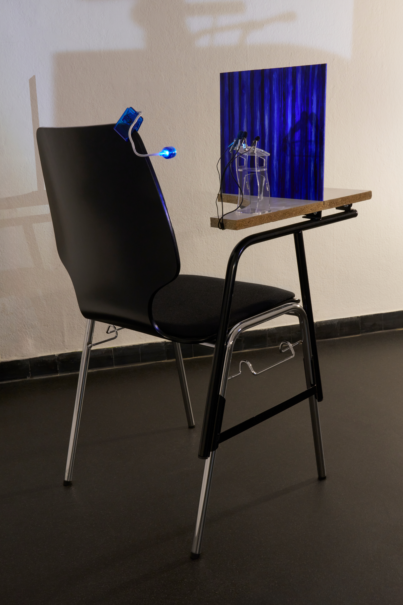
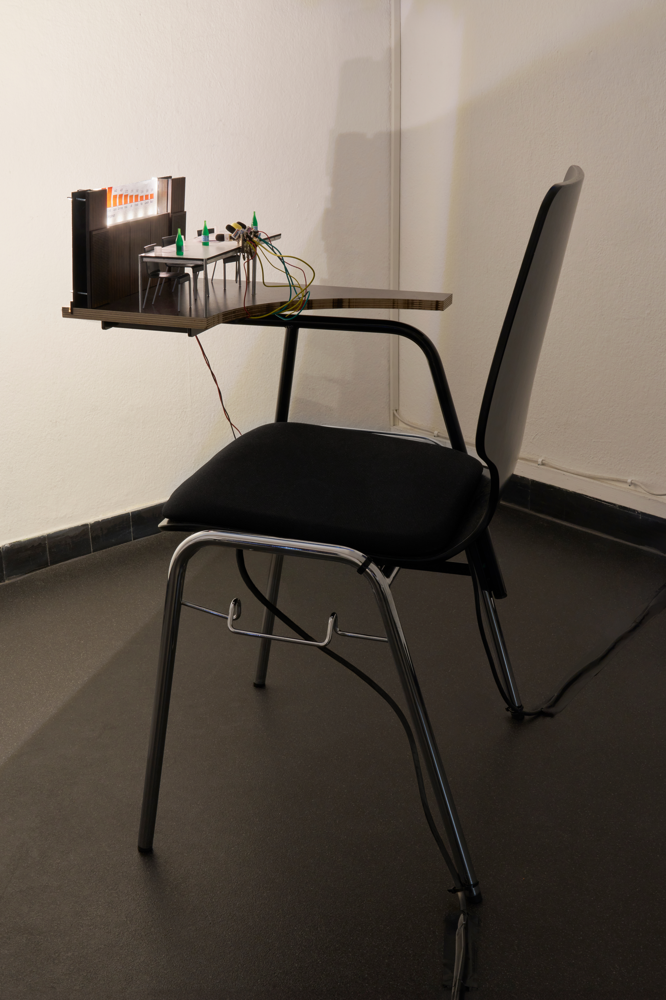
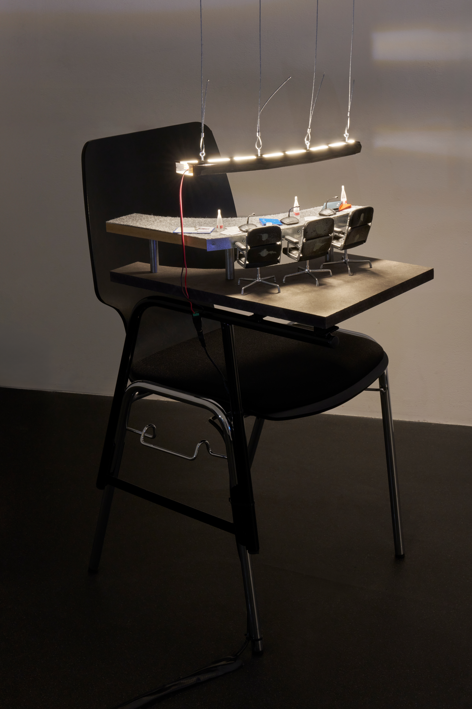

2024 COTTONMOUTH ou; comment parler de la fin du monde avec assurance, La Placette, Lausanne
You find yourself in an immense hall, like an auditorium, a serious room filled with serious people. A conference is about to take place, and it will be broadcast live in numerous countries. Around you, a muffled agitation adds to the general confusion of not knowing why you are there.
After a while, all eyes turn to the central stage and the people gathered there, individuals who visibly embody seriousness, here for a serious conference.
But soon, you begin to grasp the urgency, the disaster unfolding before your eyes, though you cannot quite discern its contours.
The silence is oppressive, and only the sound of camera flashes reminds you that time is passing. Around you, journalists and spectators seem frozen, caught in an interminable wait, hoping for a decision to finally be made. But nothing happens. Inertia prevails. Words fail to come.
In politics, language is crucial: discourse serves to structure and produce a vision of the world, and speaking is already a form of action.
Here, however, everyone is struck by inertia, which is, by definition, characterized both by the resistance of a body to being set in motion and by the inability of human beings to change how they process information.
And yet, the disaster will never be clearly announced; it may never even occur. It is also possible that we have already gone through it without fully realizing.
Isn’t the real issue rather the state of emergency that comes before it, that very state plunging us into inaction and the anxiety of a hypothetical apocalypse? In fiction, “waiting for the end is the measure of the apocalypse; the longer it stretches, the more we grasp the passage of time and the weight of the event to come.”¹ The anticipation of catastrophe, which is supposed to be a precise and punctual moment, has now, in our daily lives, become a norm that stretches abnormally over time. Above all, it is a state mechanism used to control bodies and individual freedoms, plunging us into an eternal present.
¹ Maguette Ndiaye, Pour une esthétique de l’apocalypse, Université de Strasbourg, 2018
Text written by Melody Lu








CREDITS:
Curation – Nicolas Ponce & Virginie SistekPaintings – Claire NydeggerFurnitures – ECAL